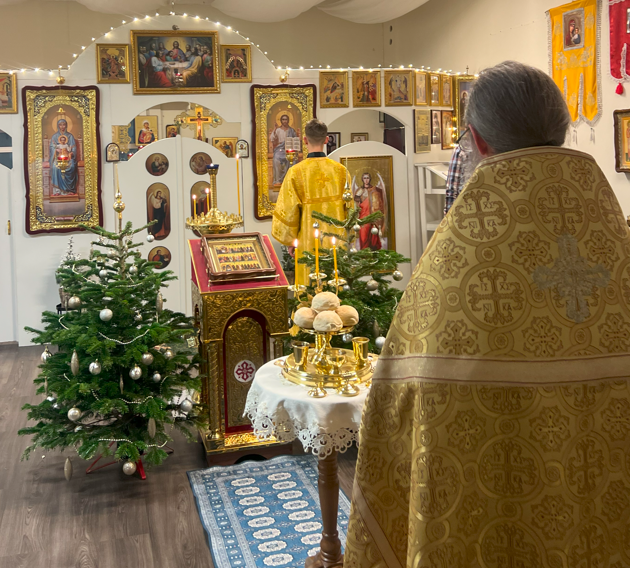

УПЦ в Турку
Головна сторінка
Розклад богослужінь
Контакти
ПРАВОСЛАВНИЙ КАЛЕНДАР
Menu

Регулярні Літургії звершуються в недільні та святкові дні за адресою
Säkkikuja 3
Säkkikuja 3 Turku
Pflegegeld Versicherung
Актуальні новини та світлини парафії публікуються в наших соціальних мережах: